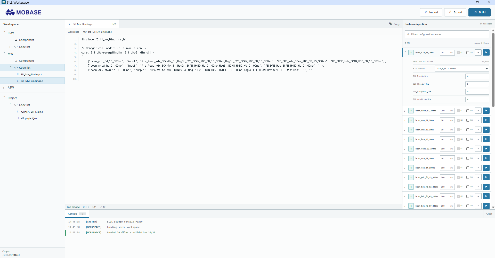
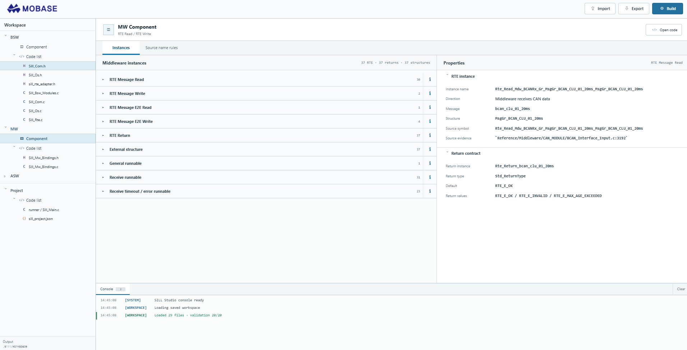

코드 생성 결과물을 import해 테스트 케이스를 만들고, 코드에서 식별한 RTE·메시지·구조체·Runnable 요소를 instance로 구성해 실행 가능한 검증 환경으로 연결했습니다.
MOBASE ASEC · Software-in-the-Loop
SiL 검증 환경
Overview
Problem
생성 코드만으로는 인터페이스 관계와 호출 주기를 반복해서 확인하기 어렵습니다. 테스트에 필요한 요소를 다시 찾는 수작업을 줄이고, 코드 결과가 곧 테스트 입력이 되는 구조가 필요했습니다.
Approach
코드 import부터 instance injection과 결과 확인까지 한 흐름으로 구성했습니다.
- 생성 결과 코드를 workspace로 import하고 interface·RTE symbol을 분석합니다.
- 메시지, 구조체, 반환값, Runnable 등 테스트에 필요한 요소를 추출합니다.
- mobilgene에서 컴포넌트와 인터페이스를 구성하듯 추출 요소를 instance로 만들어 주기·입력·반환 조건을 연결합니다.
- 구성된 instance를 기반으로 테스트 케이스를 생성·실행하고 반환값과 오류 상태를 확인합니다.
Screen evidence

